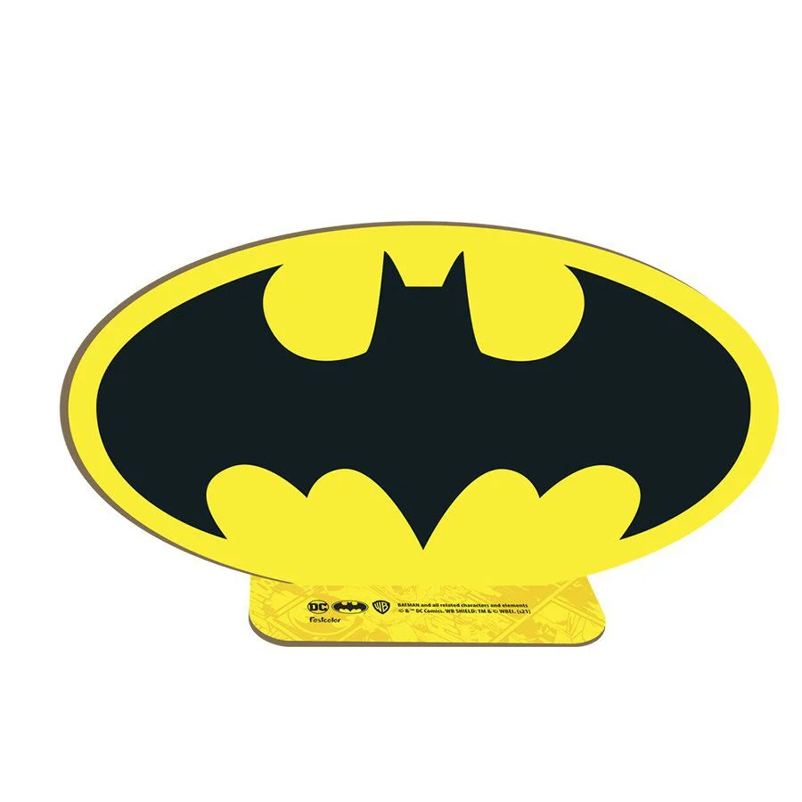

,


Batman salva Gotham de explosões e prende o Charada.
11/09/2022
Na noite do dia 11 o Batman lutou contra um inimigo invisisivel, que estava pronto para explodir Gotham, mais por causa do nosso herói o vilão denominado Charada foi derratado e esta preso sua indentidade ainda não foi divulgada.
Clique aqui para ver mais
www.jornaldegotahm.com.br